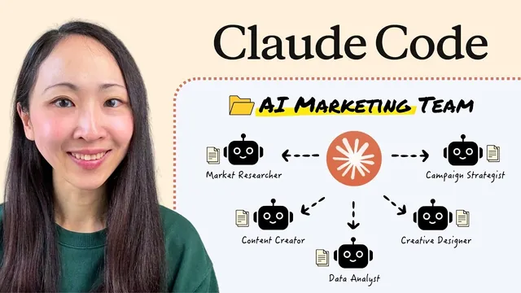

Claude Code로 AI 마케팅팀 통째로 꾸리기 (에이전트 + 스킬)

원본 영상 보기 →
- Skills는 워크플로 하나에 하나씩, 레퍼런스를 먹여서 만든다
- Agents는 Skills가 쌓여서 집중력이 흐려질 때 쓰는 해법이에요
- context 폴더와 CLAUDE.md가 팀의 기반이에요
한 줄 요약
Grace Leung이 Claude Code(터미널이나 VS Code 안에서 파일 작업까지 시키는 Claude 도구)로 여행 브랜드 Go Travel의 AI 마케팅팀을 처음부터 만드는 과정을 보여 줘요. Agents 5명과 Skills 12개로 팀을 짠 뒤 캠페인 한 건을 통째로 맡기고 Notion 작업 보드와 휴대폰으로 일을 시키는 데까지 이어집니다.
전체 내용 정리
마케팅팀 설계는 4단계로 하고 작업 환경은 폴더부터 잡아요
Grace는 Claude 하나가 리서치, 글쓰기, 분석, 디자인을 한꺼번에 해내는 팀이 될 수 있다고 봐요. 비개발자도 따라 할 수 있게 처음부터 단계별로 만들겠다는 게 영상의 출발점입니다. 설계는 네 단계예요.
첫째, 내가 매주 하는 마케팅 업무를 전부 적어 봅니다. 둘째, 반복되는 일마다 Skills(작업 방법을 적어 둔 재사용 지시서)를 만들어요. 워크플로 하나에 Skill 하나가 이상적이라고 해요. 셋째, 비슷한 Skills를 겹치지 않는 역할로 묶어 Agents(역할과 도구가 정해진 전문 담당자)를 만듭니다. 역할이 좁을수록 결과물이 좋아진다는 설명이에요. 넷째, 프로젝트를 세팅해서 Claude가 팀에 누가 있고 언제 Agent를 쓰고 언제 Skill만 쓸지 알게 해 줍니다.
이번 사례는 Go Travel이라는 여행 브랜드예요. 결과는 Agents 5명과 Skills 12개입니다. 브랜드마다 마케팅 초점이 다르니 구성은 달라지겠지만 원리는 같다고 Grace는 말해요.
Claude Code를 쓰는 방법은 세 가지예요. Claude Code 데스크톱 앱에서 탭을 바꿔 쓰는 방법, VS Code나 Cursor 같은 IDE(코드 편집기)에서 쓰는 방법, 터미널에서 쓰는 방법이 있고 터미널이 가장 강력해요. Grace는 파일과 폴더를 옆에서 같이 볼 수 있어서 VS Code를 골랐어요.
설치 순서는 이래요.
- VS Code를 내려받아 설치합니다.
- VS Code의 Extensions(확장) 메뉴에서 Claude Code를 검색하고 Anthropic 공식 확장을 설치해요.
- 설치 후 사이드바의 Claude 아이콘을 누르고 Claude 요금제 계정으로 로그인합니다. 브라우저가 열리고 로그인을 마치면 바로 쓸 수 있어요.
그다음은 브랜드 폴더예요. Grace의 Go Travel 폴더에는 sales, ops, marketing처럼 부서별 폴더가 있어요. 실제 회사가 일을 나누는 방식 그대로 짠 거죠. 이번에는 marketing 폴더만 다룹니다.
marketing 폴더 안에는 두 종류의 폴더를 둬요. 하나는 AI Agents가 재사용하는 시스템 폴더로 context, SOP, templates 같은 것들이에요. 다른 하나는 결과물이 쌓이는 작업 폴더로 Ads, pages, presentations 같은 것들입니다. Agents가 만든 산출물은 전부 작업 폴더로 들어가요.
여기서 Grace가 가장 중요하다고 강조한 단계가 context 폴더 채우기예요. 브랜드 보이스 가이드, 스타일 가이드, 제품 정보, 마케팅 전략 문서를 먼저 넣어 두면 Agents가 처음부터 브랜드를 알고 시작해요. 그 차이가 결과물 전체를 좌우한다고 해요. 템플릿과 SOP(업무 표준 절차서)도 함께 넣어 두면 좋다고 합니다.
폴더가 준비되면 VS Code에서 프로젝트 폴더를 열고 CLAUDE.md(프로젝트 전체에 적용되는 맞춤 지시서) 파일부터 만들어요. Claude에게 폴더를 훑어 보고 초안을 쓰게 하면 파일이 바로 생깁니다. 한 번 만들고 끝나는 파일이 아니라 계속 고쳐 나가는 파일이라는 점도 Grace가 짚어 줬어요.
마지막으로 Anthropic이 만든 공식 Skills를 설치해요.
- 채팅창에
/plugin슬래시 명령을 입력합니다. - 공식 Skills GitHub 저장소를 마켓플레이스로 추가해요.
- 다시 plugin 화면으로 돌아와 document skills를 검색하고 Install을 누릅니다.
- 슬래시를 입력했을 때 Skills 목록이 쭉 보이면 공식 Skills 팩 설치가 끝난 거예요.
첫 번째 Skill은 템플릿을 보여 주는 방식으로 만들어요
첫 번째로 만드는 건 모든 마케터에게 필요한 브랜드 덱(발표 자료) Skill이에요. Grace는 이걸 레퍼런스 기반 방식이라고 불러요. 잘된 예시나 템플릿을 Claude에게 주고 패턴을 스스로 파악하게 하는 방법입니다.
브랜드 템플릿을 정확히 따르는 덱 Skill을 만들려면 두 가지가 필요해요. 브랜드 덱 템플릿 한 벌과 그 템플릿이 어떻게 짜여 있는지에 대한 자세한 분석이에요. templates 폴더에는 이미 덱 템플릿이 들어 있고 Claude가 그대로 따라야 할 스타일이 이거예요.
순서는 두 번이에요. 먼저 Claude에게 이 템플릿을 분석해서 분석 리포트를 만들게 합니다. 꽤 자세한 분석이 돌아와요. 그다음 공식 PowerPoint 제작 Skill을 확장해서, 템플릿과 분석 리포트를 바탕으로 새 브랜드 덱 Skill을 만들어 달라고 요청해요.
바로 첫 Skill이 만들어집니다. Claude가 Skills라는 새 폴더를 만들고 그 아래에 브랜드 덱 Skill 폴더를 두는데, 안에는 assets(소재)와 references(참고 자료)가 들어 있어요.
이제 배경 정보만 주면 브랜드 덱을 뽑을 수 있어요. Grace는 다가오는 여름 캠페인의 전략 덱을 요청했어요. Claude가 방금 만든 Skill을 불러서 13장짜리 슬라이드를 돌려줬고 앞서 본 브랜드 템플릿과 같은 모양이에요. 여백과 차트 몇 군데는 손봐야 했지만 90% 정도는 끝난 상태라고 Grace는 평가해요.
이 방식은 템플릿이 여러 개여도 돼요. 전략 덱용, 고객 보고용, 제품 출시용 템플릿을 각각 넣어 두면 Claude가 각각을 정확히 따릅니다.
두 번째 Skill은 MCP로 이미지 모델을 연결해서 만들어요
두 번째는 외부 도구와 이어지는 Skill이에요. MCP(Claude가 외부 도구와 연결되는 규격)로 이미지 생성 모델을 붙여서 소셜 크리에이티브 디자인 Skill을 만듭니다.
먼저 크리에이티브 스타일 라이브러리를 세팅해요. templates 폴더 아래에 social creatives라는 하위 폴더를 만들고 참고할 디자인 템플릿을 넣습니다. 이 파일들은 시각적 영감을 주는 용도이고 똑같이 베끼라는 뜻이 아니에요. 어떤 스타일이 있고 언제 쓰는지 알려 주는 스타일 가이드도 같이 넣어 줍니다.
이 Skill은 Nano Banana 모델로 이미지를 만들기 때문에 MCP 연결이 먼저 필요해요. Grace가 VS Code에서 가장 안정적이라고 찾은 방법은 프로젝트 루트 폴더에 .mcp.json 파일을 만드는 거예요. 이 파일은 이 프로젝트에서 Claude가 어떤 외부 도구에 연결할 수 있는지 알려 줍니다. 여기에 Nano Banana MCP 서버를 Gemini API 키와 함께 등록해요. 영상 설명란에 해당 GitHub 저장소 링크를 올려 두겠다고 했어요.
설정 후에는 VS Code를 다시 시작하고 /mcp를 입력해요. 이 프로젝트에 연결된 MCP 서버 목록이 보이면 준비가 끝납니다.
이제 두 번째 Skill을 만들어요. 캐러셀이나 단일 소셜 이미지를 Nano Banana 모델로 디자인하는 Skill이에요. Claude가 방금 만든 스타일 라이브러리를 훑어 보고 금방 같은 Skills 폴더 안에 Skill을 만들어 줍니다.
사용법은 간단해요. 필요한 소셜 크리에이티브를 짧은 프롬프트로 요청하면 돼요. Grace는 5장짜리 Instagram 캐러셀을 요청했고 결과가 꽤 깔끔했어요. 라이브러리의 스타일 하나를 따르되 디자인을 복사하지 않고 분위기만 가져왔다는 점이 눈에 띄어요.
Grace는 이래서 레퍼런스를 세팅하는 일이 Skill 출력 품질에 그렇게 중요하다고 말해요.
Skills가 12개로 늘면 전문가 역할을 나눈 Agents가 필요해요
같은 방식으로 Grace는 마케팅 Skills 12개를 만들었어요. 그런데 한 대화에 Skills를 쌓을수록 Claude의 집중력이 떨어진다고 해요. 한 사람이 작가, 분석가, 디자이너를 한꺼번에 하는 상황과 같아요. 이때 필요한 게 공식 명칭으로 sub-agents인 전용 Agents예요. Agents는 자기 역할과 도구를 가진 전문 팀원이고 Skills는 Agents가 함께 쓰는 공용 플레이북이에요.
첫 Agent는 데이터 분석가예요. 앞서 만든 콘텐츠 Skills와는 완전히 다른 방식으로 생각하는 역할이라 시작하기 좋다고 해요.
만드는 순서는 이래요.
- Claude Code 채팅창에
/agents를 입력하고 continue in terminal을 눌러 터미널 화면을 엽니다. - Create New Agents를 고르고 이 프로젝트에만 적용하는 옵션을 선택해요.
- Claude가 Agent의 마크다운 파일을 직접 생성하게 하고 Agent가 할 일을 설명합니다.
- 이번에는 data analyst라는 이름, 사용할 Skills를 알려 주고 도구, 기본 모델, 색상, agent memory 위치를 차례로 고릅니다.
그러면 첫 Agent가 바로 만들어져요. 프로젝트에 Agents 폴더가 새로 생기고 그 아래 data analyst 마크다운 파일이 들어 있어요. 이 파일에 Agent의 역할, 쓸 Skills, 핵심 책임이 적혀 있습니다.
테스트는 캠페인 데이터셋으로 해요. 데이터는 8종류로 구성되어 있어요. @ 태그로 이 Agent를 불러서 발표 가능한 캠페인 리포트와 성과 대시보드를 만들어 달라고 요청합니다. Agent는 캠페인 리포트 Skill과 데이터 시각화 Skill을 불러 써요.
리포트에는 채널별 성과 분석과 요약이 담겼고 모든 데이터셋을 종합한 분석이라 꽤 포괄적이에요. 대시보드는 핵심 지표와 주요 시사점, 채널별 성과를 보여 주는 차트와 도표, 주간 매출 추이를 요약하고 마우스를 올리거나 선택하면 반응하는 인터랙티브 형태예요. 브랜드 템플릿이 그대로 적용되어 있고 새 캠페인 데이터가 들어올 때마다 이 트래커를 갱신하게 시킬 수도 있어서 시간이 많이 절약된다고 해요. 데이터 분석가 Agent는 숫자와 차트와 패턴으로 생각하는 팀원이에요.
두 번째 Agent는 스토리와 헤드라인으로 생각하는 콘텐츠 제작자예요. 같은 /agents 명령으로 터미널 화면을 열고 프롬프트로 만듭니다. 이 Agent는 여러 형식의 마케팅 콘텐츠를 만들고 앞서 만든 콘텐츠 제작 Skills 4개를 장착하고 있어요.
과제는 다가오는 캠페인용 블로그 글이에요. 글에는 lead magnet(연락처를 받는 대신 나눠 주는 자료)도 연결해야 해요. 채팅에서 이 Agent를 태그하면 Claude가 작업을 넘겨요. Agent는 블로그 작성 Skill로 글을 쓰면서 키워드 리서치 도구를 쓰고 lead magnet Skill로 PDF 가이드북을 만듭니다.
블로그 글은 Grace가 정해 둔 구조를 따라 목차와 불릿이 있고 AI 검색에 최적화된 형태예요. 글 안에 lead magnet 가이드 링크까지 들어갔어요. 가이드는 11페이지로 브랜드 색조에 맞췄고 내용 가치에 집중하도록 디자인을 일부러 단순하게 했어요. 필요하면 Skills를 얼마든지 고쳐 쓸 수 있다고 Grace는 덧붙여요.
나머지 Agents 3명도 같은 방식으로 만들어요. 시장 조사원, 크리에이티브 디자이너, 캠페인 전략가이고 각자 앞서 만든 Skills 중 맞는 묶음을 장착합니다.
팀을 돌리기 전에 CLAUDE.md에 라우팅 규칙부터 넣어요
팀을 돌리기 전에 꼭 해야 할 단계가 있어요. CLAUDE.md에 agent routing(어떤 일을 어느 Agent에게 맡길지 정하는 규칙)을 추가하는 거예요. Claude가 어떤 일을 어느 Agent에게 넘길지 명확히 알게 되어 시스템이 훨씬 안정적으로 돌아갑니다.
그 상태에서 복잡한 과제를 줬어요. 일본 벚꽃 시즌 캠페인을 새로 내놓는다는 설정이에요. 시장 조사, 캠페인 브리프, 소셜 포스트, 랜딩 페이지, 광고 크리에이티브까지 풀 패키지가 필요해요.
Claude는 단계마다 Agent를 쓸지 Skill만 쓸지 스스로 정했어요. CLAUDE.md에 규칙을 넣어 둔 덕분이에요. 모든 단계에 Agent가 필요한 건 아니에요. 리서치나 캠페인 전략처럼 여러 정보를 종합해야 하는 일은 Agent가 도움이 되지만 콘텐츠 제작처럼 실행 중심이고 단순한 일은 Skill만으로 충분하다는 게 Grace의 설명이에요.
작업 흐름은 이랬어요. 먼저 리서치 도구로 시장 조사를 하고 끝나면 캠페인 브리프로 넘어가요. 그다음 이미지를 만들고 랜딩 페이지를 만듭니다. 10분쯤 지나자 결과물이 다 나왔어요.
- 시장 조사: 공략해야 할 타깃 고객까지 포함해서 잘 정리되어 있어요.
- 캠페인 브리프: 조사 결과가 실행 내용으로 이어져요. 메시지 부분에는 태그라인으로 "Sakura like a Local"이 제안되어 있어요. 파악한 트렌드 대화를 반영한 소셜 포스트도 있어요.
- 크리에이티브: 모두 같은 캠페인 테마로 묶여 있어요. Grace는 특히 마지막 것이 마음에 든다고 해요.
- 랜딩 페이지: 랜딩 페이지 빌더 Skill로 만들었고 브랜드 톤과 캠페인 테마가 맞아요. 이미지 스타일도 전문적이고 필요한 섹션과 call to action(행동 유도 버튼)이 다 있어요.
Grace가 보여 주고 싶었던 건 복잡한 과제에서도 Claude가 모든 산출물을 하나의 흐름으로 연결해 둔다는 점이에요.
Notion 작업 보드와 휴대폰으로 팀을 24시간 부려요
실제 일에서는 사람 동료와도 같이 일하죠. 그래서 Grace는 Notion에 공유 작업 보드를 만들어 보여 줘요. 누구든 할 일을 올리면 AI Agents가 집어 가서 처리하는 구조예요.
보드는 단순한 칸반 보드예요. 팀의 마케팅 작업을 추적하고 작업마다 우선순위, 제목, 상세 내용이 있어요. 대기 중인 작업은 상태가 To-Do이고 끝나면 Complete로 옮깁니다. 이 아이디어는 Grace가 네트워크에서 알게 된 마케터 David에게서 얻었다고 해요.
Claude에는 이런 취지의 프롬프트를 넣어요. Notion 보드에서 대기 중인 작업을 확인해 각 작업에 맞는 Agent를 배정하고 우선순위에 따라 실행하라는 내용이에요. 이번에는 유럽 캠페인 론칭 작업을 집어서 리서치와 캐러셀 포스트 디자인을 실행했어요. Claude는 끝난 작업의 상태를 Complete로 바꾸면서 산출물의 파일 경로를 같이 적어 줬어요.
결과도 확인해 볼 수 있어요. 리서치가 잘 끝났고 그 결과를 반영한 총 7장짜리 캐러셀 포스트도 잘 나왔습니다. 팀원과 보드로 협업하고 실행은 AI Agents에게 맡기는 구조가 이렇게 완성돼요.
여기서 더 나가면 휴대폰으로 AI 팀과 대화할 수 있어요. Claude Code가 이제 휴대폰을 내 컴퓨터에서 돌고 있는 세션에 연결해 주기 때문에 Claude 모바일 앱에서 어디서든 일을 보낼 수 있어요. Claude Cowork의 Dispatch 기능을 아는 분이라면 본질적으로 같은 기능이라고 Grace는 설명합니다.
연결 방법은 이래요.
- 원격으로 연결할 대화에서 먼저 remote control을 켜요. 채팅에 remote control 슬래시 명령을 입력합니다.
- remote control connected 문구와 함께 링크가 나옵니다.
- 이 링크를 휴대폰에서 열면 로컬에서 돌아가는 Claude Code 세션과 바로 연결돼요.
링크는 세션 전체를 조종할 수 있는 권한을 주기 때문에 절대 남에게 공유하면 안 돼요.
연결된 휴대폰에서 "check the task board"라고 입력하면 이미 세팅한 Skills가 작동해서 Notion의 대기 작업을 가져와 평소처럼 실행해요. 휴대폰으로 보낸 내용은 로컬 Claude Code 세션에 즉시 동기화됩니다. 이번에는 새 캠페인용 랜딩 페이지 제작 작업을 찾아서 끝냈어요.
한계도 있어요. 지금은 연결된 이 세션 하나에만 의지해야 해요. 컨텍스트가 가득 차면 대화를 비우는 명령으로 정리한 뒤 다시 시작하면 됩니다. 연결을 끊으려면 점 세 개 메뉴에서 archive를 눌러요. 작업물은 자리를 비웠어도 모두 로컬에 저장돼 있습니다.
급한 일이 생겼을 때 AI 에이전트 팀에게 바로 시킬 수 있으니 24시간 일하는 팀원처럼 느껴진다고 Grace는 말해요.
핵심 인사이트
- Skills는 워크플로 하나에 하나씩, 레퍼런스를 먹여서 만든다: Grace는 템플릿과 그 분석 리포트를 Claude에게 주고 Skill을 만들게 했어요. Grace는 이 방식으로 만든 덱이 브랜드 템플릿을 그대로 따랐다고 보여 줘요. 스타일 라이브러리를 참고용으로 쓰면 복사가 아니라 분위기를 가져옵니다.
- Agents는 Skills가 쌓여서 집중력이 흐려질 때 쓰는 해법이에요: 한 대화에 Skills를 많이 넣을수록 Claude는 덜 집중해요. 역할이 겹치지 않는 Agents로 나누면 각자 자기 일에 맞는 Skills만 들고 일해서 결과가 좋아진다고 Grace는 봐요.
- context 폴더와 CLAUDE.md가 팀의 기반이에요: 브랜드 보이스, 스타일, 제품, 전략 문서를 먼저 넣어 두면 Agents가 브랜드를 안 상태로 일해요. CLAUDE.md에 라우팅 규칙까지 적어 두면 복잡한 과제에서 Agent를 쓸 일과 Skill만 쓸 일을 Claude가 알아서 나눕니다.
- 모든 일에 Agent가 필요한 건 아니에요: 종합과 판단이 필요한 리서치와 전략은 Agent에게, 실행 중심의 콘텐츠 제작은 Skill에게 맡기는 편이 낫다는 게 Grace의 기준이에요.
- 사람 동료와 AI 팀은 같은 작업 보드를 보고 일할 수 있어요: Notion 칸반 보드에 할 일을 올리면 Agents가 우선순위대로 처리하고 상태와 산출물 경로까지 적어 줍니다. 사람의 협업 방식에 AI를 끼워 넣는 구조예요.
오늘 당장 해볼 것
- 이번 주에 반복한 마케팅 업무를 전부 적어 보세요. Grace의 1단계가 이 작업이에요. 적어 보면 어느 일을 Skill로 만들지, 어떤 일끼리 묶어 Agent로 만들지 윤곽이 잡힙니다.
- VS Code에 Claude Code를 설치하고 브랜드 폴더를 만들어 보세요. Extensions에서 Claude Code를 검색해 Anthropic 공식 확장을 설치하고 로그인합니다. 그다음 marketing 폴더 아래에 context와 templates 같은 시스템 폴더, Ads나 pages 같은 작업 폴더를 만들고 context에 브랜드 보이스 가이드와 스타일 가이드, 제품 정보, 마케팅 전략을 넣어 보세요. 채팅에서 Claude에게 폴더를 읽고 CLAUDE.md 초안을 쓰게 하면 프로젝트 기본 세팅이 끝나요.
- 브랜드 덱 Skill을 하나 만들어 보세요.
/plugin으로 공식 Skills 저장소를 마켓플레이스에 추가하고 document skills를 설치합니다. 그다음 templates 폴더에 자사 덱 템플릿을 넣고 Claude에게 템플릿을 분석해 리포트를 만들게 하세요. 이어서 공식 PowerPoint 제작 Skill을 확장해 템플릿과 분석 리포트 기반의 브랜드 덱 Skill을 만들어 달라고 요청합니다. 한 번 해 보면 레퍼런스 기반 방식이 어떤 느낌인지 감이 와요. - 가장 쉬운 Agent로 데이터 분석가를 만들어 보세요.
/agents를 입력하고 continue in terminal, Create New Agents, 이 프로젝트에만 적용 순서로 가서 역할과 쓸 Skills를 설명하면 됩니다. 만든 뒤@로 불러 캠페인 데이터를 주고 리포트와 대시보드를 부탁해 보세요. 숫자로 생각하는 역할이라 콘텐츠 Skills와 차이가 분명히 보입니다. - Notion에 To-Do와 Complete 상태가 있는 칸반 보드를 만들어 보세요. 작업마다 우선순위, 제목, 상세 내용을 적고 Claude에게 대기 중인 작업을 확인해 Agent를 배정하고 우선순위대로 실행하라고 요청합니다. 끝난 작업의 상태와 산출물 경로가 자동으로 적히는지 확인해 보세요. Notion 연결 방법은 영상에서 따로 다루지 않아요.